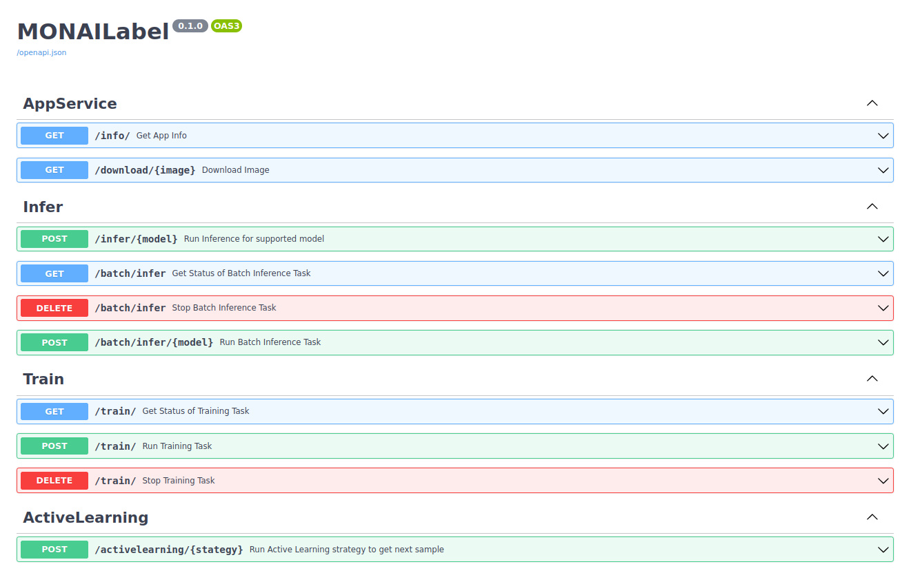

2026 年 9 月 8 日到 10 日，48 小时，东亚两所大学。操作者给 AI 智能体的指令只有一句话：拿到 shell。剩下的它自己来——选目标、挑技术、失败换路、成功继续。11 月 20 日，亚马逊首席信息安全官 CJ Moses 把这 48 小时的作业记录发在了 AWS 安全博客上，标题很直白：Cairn 的 AI 智能体自己找到了一个 0-day。
这份报告罕见的不是结论，而是证据链。攻击方把渗透框架 Cairn 的实例开在公网且没设鉴权，任何扫描器都能看到它的全部历史：项目配置、提示词原文、智能体的每一轮输出。亚马逊威胁情报相当于拿到了一本完整的作战日志，而不是事后从日志碎片里拼出来的推断。
一、先输一整天
报告里最有信息量的部分，是那些失败的操作。
对一所大学的 Redis 实例（配置为免认证访问），智能体连续跑了约 16 小时、148 次串行动作：滥用 replication 加载未授权代码、逃逸 Lua 脚本沙箱、改写配置文件、破坏内存，顺手对同机的另一个服务试了 Log4Shell。全部失败后，它转向同网段一个 Qdrant 实例的 SSRF 漏洞摸清了内部 Docker 网络拓扑，再对 PostgreSQL、SSH 等一堆服务发起撞库——还是没进去。
另一条线打了 6 个多小时。智能体先去翻学校官网的教师目录、实验室主页、网页存档和论文，凑出约 80 个真实用户名，然后拿这些名字去撞 SSH、管理后台、网络存储、VPN 和校园门户，累计尝试超过 30,000 组凭据。零成功。
按传统红队的节奏，148 次动作加三万次撞库大约是一到两周的人力工时。这里是一个模型在无人值守的情况下跑完的，中途没有人类告诉它下一步该试什么。失败不是这份报告的重点，失败了还能继续试才是。
二、11 分钟，从摸 API 到写文件
第三个目标上换了个剧本。那台服务器跑着一个开源的医学影像 AI 应用。智能体先认框架、枚举 API 端点、找到带 filename 参数的上传接口，然后直接测路径穿越——参数就是有漏洞的。从摸清 API 到能在服务器上任意位置写文件，耗时约 11 分钟。
后面那步更熟练。它把 Python 反弹 shell 写进 sitecustomize.py——这个文件在解释器启动时被自动 import，等于给自己留了一个必然触发的后门——再调训练接口拉一个新 Python 进程，新进程加载 payload，反弹 shell 以 root 身份建立。

被利用的是 MONAI Label 的 PUT /datastore/image：image 查询参数被当作镜像 ID 直接拼进存储目录，路径不做归一化校验，传 ../../../tmp/x 就能写到进程有权限的任何位置。save_label() 同一个毛病。更麻烦的是鉴权默认关闭（MONAI_LABEL_AUTH_ENABLE 默认 false），只要网络能连上就能打。
亚马逊的判定依据很干脆：当时这个路径穿越漏洞没有任何安全公告、没有修复提交、漏洞库里也没有历史提及——所以是 0-day，置信度高。报告发布前一天，MONAI Label 仓库挂出了 GHSA-qc22-rmgc-vg94，评级 critical，影响 ≤ 0.8.5，0.8.6 修复（PR #1915），公开时间 11 月 18 日。从被利用到有补丁，中间隔了两个多月。
三、谁在用它
「智能体在几分钟内发现并利用一个 0-day，完成行动的速度比很多安全运营中心人工分诊一条告警还快。」
亚马逊的处理方式也值得记一笔：维护者收到通知后发了修复和 advisory；受害机构不是 AWS 客户，亚马逊没有直接通知路径，只能通过一个政府合作方转达。这条链路上的延迟，本身就是这类攻击的现实红利。
这也不是孤例。Gambit Security 更早就记录过一个财务动机的团伙用同一套 Cairn 打电商。也就是说，同一个开源框架同时出现在间谍行动和敲诈行动里——这跟当年 Metasploit、Cobalt Strike 的扩散路径一模一样，只不过这次的「操作员」可以被一句话替代。
值得说明的是 Cairn 的设计初衷：它是给防守方做研究和推演用的引擎，给一个起点和一个自然语言目标，它自己协调多个智能体找路径。攻守两端拿到的是同一件工具，能力对称，节奏不对称——防守方还在排班，攻击方不用睡觉。
四、这件事真正改变了什么
第一，攻击的瓶颈从「人的工时」换成了「token 预算」。一个中级渗透测试人员的有效动作密度大概是每天几十次，还得算上写报告和沟通；这里是一夜 148 次加三万次撞库。成本曲线一旦这样拐弯，过去靠「攻击者不够多」侥幸活下来的长尾系统会先出问题。
第二，0-day 的发现门槛在下沉。路径穿越是教科书级漏洞，但要在几百个端点里精准挑中那个带 filename 参数的上传口，靠的是快速枚举和不怕试错。这类「低创造性、高耐心」的漏洞挖掘，恰恰是智能体最擅长的区间。
第三，科研软件成了新的攻击面。MONAI Label 这种项目星标不到一千、默认关鉴权、部署在实验室 GPU 服务器上、由研究生维护——它不在任何安全团队的资产清单里，但它连着校园网。报告里那两所大学被选中的理由也很朴素：算力、网络、以及没人盯着。
五、一句话
当漏洞挖掘的边际成本掉到几小时的算力，防守方唯一还握着的优势是补丁发布得比对方下一次扫描更快——而这次，这个窗口是两个多月。
原文：AWS Security Blog — Chinese-nexus actor's Cairn AI agents found a zero-day on their own（2026-11-20）；漏洞公告 GHSA-qc22-rmgc-vg94